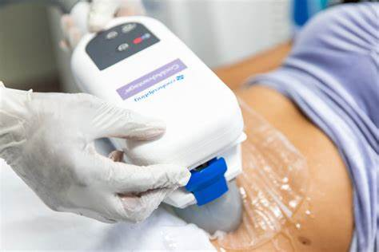
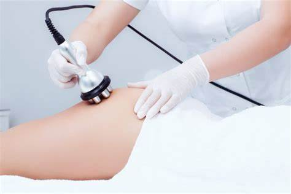
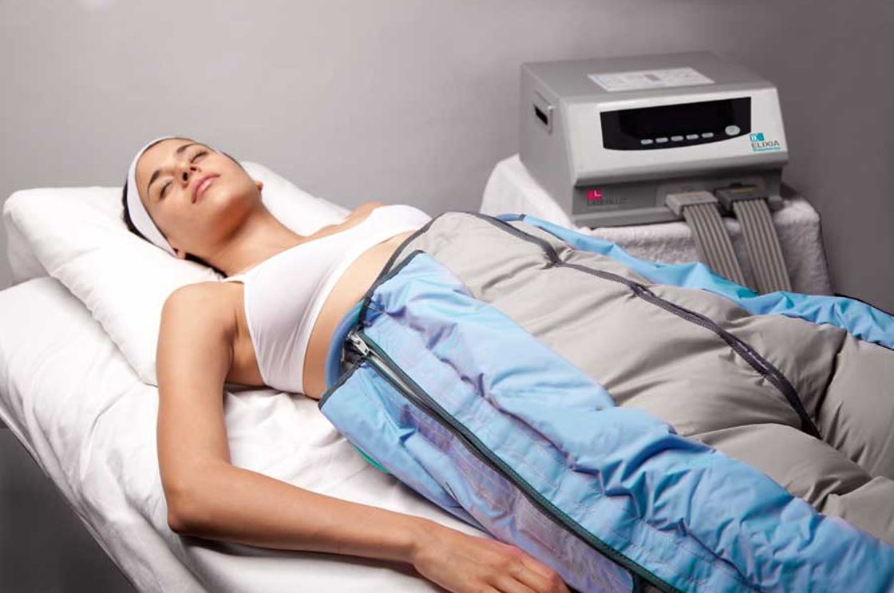
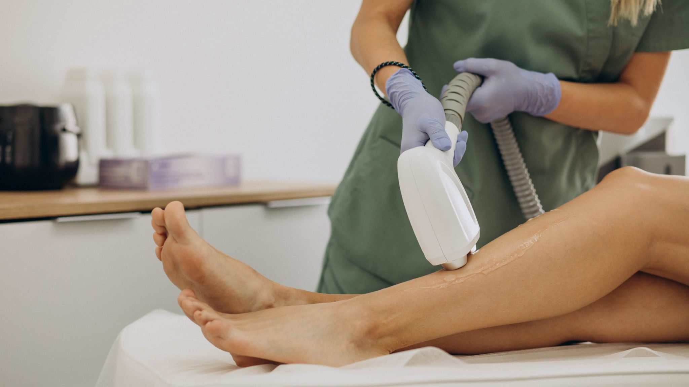

TRATAMIENTOS CORPORALES
CRIOLIPOLISIS es un procedimiento no invasivo para eliminar el exceso de grasa corporal mediante la aplicación de frío. Ha probado tener gran eficacia para reducir las capas de grasa, sin deteriorar la piel o los tejidos circundantes. las zonas de muslos, glúteos, abdomen, caderas, flancos, brazos, el pliegue escapular (espalda) y zona inguinal (ingle). Es importante tener en cuenta que no es un método de adelgazamiento, sino que se trata de un tratamiento que proporciona resultados eliminando grasa acumulada de zonas concretas donde se acumula.
CRIORADIOFRECUENCIA es un tratamiento estético no invasivo que combina la radiofrecuencia con frío, originando la destrucción de células de grasa, así como la estimulación de la producción de colágeno y elastina. Sirve para eliminar grasa localizada; Reducir la expresión de arrugas en el rostro; Tratar la flacidez, mejorando la elasticidad de la piel.
PRESOTERAPIA es una técnica de tratamiento en la que se aplica una fuerza mecánica para incrementar la presión de ciertos tejidos (venosa, arterial y del sistema linfático), generando la acción similar a un drenaje linfático, de esta manera se busca controlar problemas presentes en el sistema circulatorio.
HIFU 7D Uno de los tratamientos más demandados en el último tiempo es el HIFU o ultrasonido focalizado de alta intensidad Los resultados del HIFU 7D más apreciados en la zona facial, respetando los rasgos naturales son: Reducción de la grasa localizada, Piel más tensa y tonificada, Menos visibilidad de celulitis.

Body Up es una técnica de entrenamiento corporal que combina ejercicios de Pilates, yoga y fisioterapia para fortalecer los músculos profundos del cuerpo, mejorar la postura y el equilibrio. También se utiliza en tratamientos de celulitis, eliminación de congestión linfática, adiposidad y grasa localizada, y ayuda a moldear la figura y fortalecer los músculos. Además, Body Up es una tecnología que combina pulsos magnéticos con estimulación neuromuscular para rehabilitación de patologías neuromusculares

DEPILACION láser es un método de depilación definitiva que elimina el vello desde la raíz. Utiliza una luz monocromática y unidireccional que penetra en la piel sin dañar. Funciona mediante la emisión de luz que llega hasta el folículo piloso más profundo, debilitándolo y haciéndolo más delgado. El resultado puede variar según el tipo de vello y el sistema hormonal.
